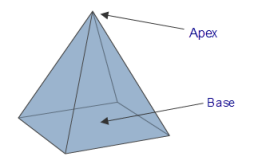

A pyramid is a polyhedron that has a base, which can be any polygon, and three or more triangular faces that meet at a point called the apex. These triangular sides are sometimes called the lateral faces to distinguish them from the base.

The base can be any polygon, but is most often a square. In the figure above click on the 'more/less' buttons to change the number of base sides. Notice that as the number of sides gets large, the pyramid begins to look a lot like a cone. In fact a pyramid and cone have a lot in common - for example the volume of the two are calculated the same way (See Volume of a Pyramid).
The base is usually a regular polygon, but it need not be. In the figure above, click off the "regular base" checkbox, then rotate the pyramid by dragging it to see the effect of this.
See Oblique pyramid definition for more on this.